You are viewing Summary view. You can go deeper into the project with this navigation.
Previous article
Ctrl + A
PROJECT
2
/
7
Next article
Ctrl + D
A Nobel Prize Data Story
How did the Nobel Prize come to be?
According to its founder, Alfred Bernhard Nobel - a Swedish chemist, engineer, inventor, businessman, and philanthropist, who established it in 1895, it was for those
"who shall have conferred the greatest benefit to humankind"
Has every year since its establishment seen a constant number of Nobel Prizes awarded?
Let's dive deeper - a closer look at the history of the Nobel Prize reveals its attunement to major events that took place, namely the two world wars of the previous century, which saw a significant decrease (WWI) or, worse, a complete absence (WWII) of Nobel Prizes:
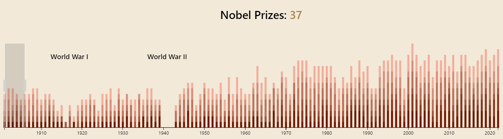
What other changes does following Nobel Prize trends across the years reveal about potential directions the world is going in?
For starters, from the timeline above it can be immediately inferred that the number of prizes awarded has almost doubled since its beginnings, from an average of 7 prizes per year in its first half a decade, to over 12 in the past few years.
Can you get a Nobel Prize in just about anything, or are there specific fields that get awards?
The 6 fields for the Nobel Prize awards are: Chemistry, Economic Sciences, Literature, Medicine, Peace, Physics.
Is it a global award, that can be earned by people across the world?
Yes, it is global, and below is a little preview of how the fields mentioned above are distributed as being most popular in certain parts of the world:
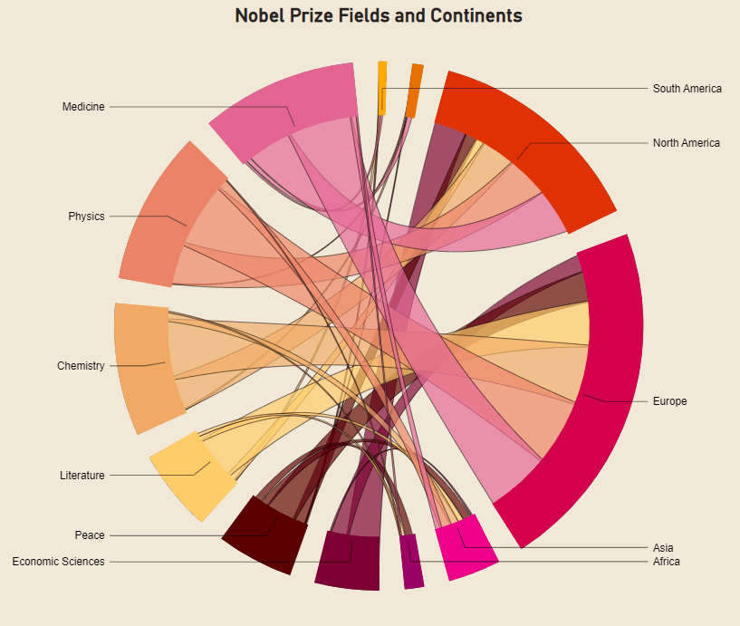
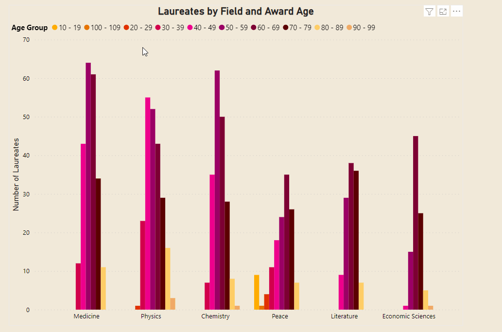
One of the first things that we can take away from the charts above, as relating to the last question asked, is that, especially in traditional sciences (Medicine, Physics, Chemistry), there has been a trend of laureates winning prizes later in life. If the average age of those who won an award in the first part of the previous century was around 50 years old, it is now over 65.
This is the other side of the coin for the fact that we have more, many more scientists in the world today than we did back then, and therefore the competition is much higher, therefore it takes longer to have a breakthrough that gets recognized.
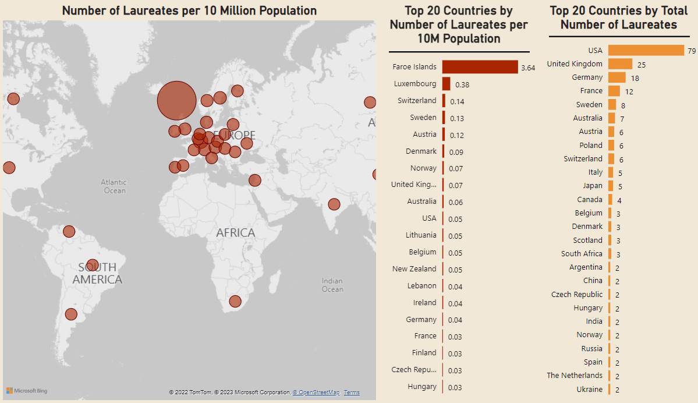
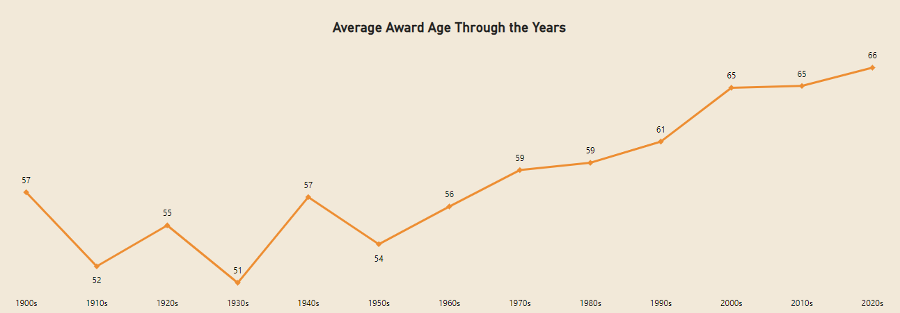
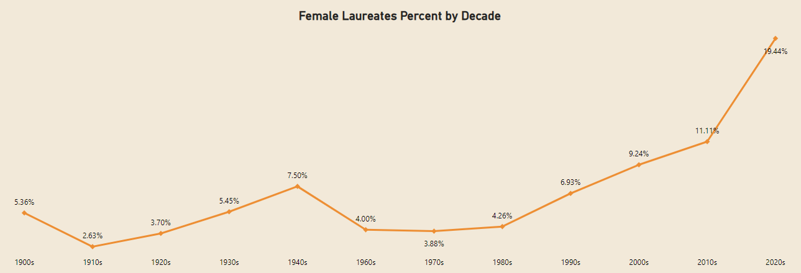
Laureates who stood ouT
Oldest Laureate
John B. Goodenough
Award Year: 2019
Field: Chemistry
Country: Germany
Award Age: 97
Youngest Laureate
Malala Yousafzai
Award Year: 2014
Field: Peace
Country: Pakistan
Award Age: 17
First Female Awarded
MArie Curie
Award Year: 1903
Field: Physics
Country: Poland
Award Age: 36
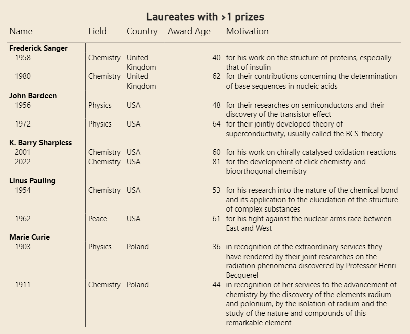
So, given all of this, what are my chances of being awarded a Nobel Prize in my lifetime?
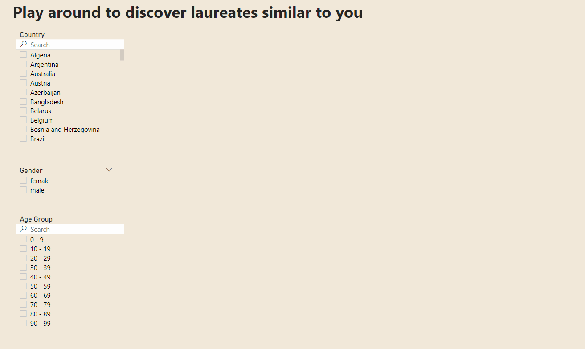
The Analysis
data story
Power BI
How did the Nobel Prize come to be?
In this section we will dive deeper in all the topics we analyzed about the Nobel prize laureates and we'll do an exploratory analysis starting and we'll answer the following questions.
- Who can be awarded a Nobel Prize? - How do the Nobel Prize awards look over the years?
- How long does it usually take to have an article awarded?
- How many women have won a Nobel Prize?
- What does it take to be awarded a Nobel Prize?
Who can be awarded a Nobel Prize?
Let's start with an overview of the laureates who were awarded a Nobel Prize in the past 3 years:
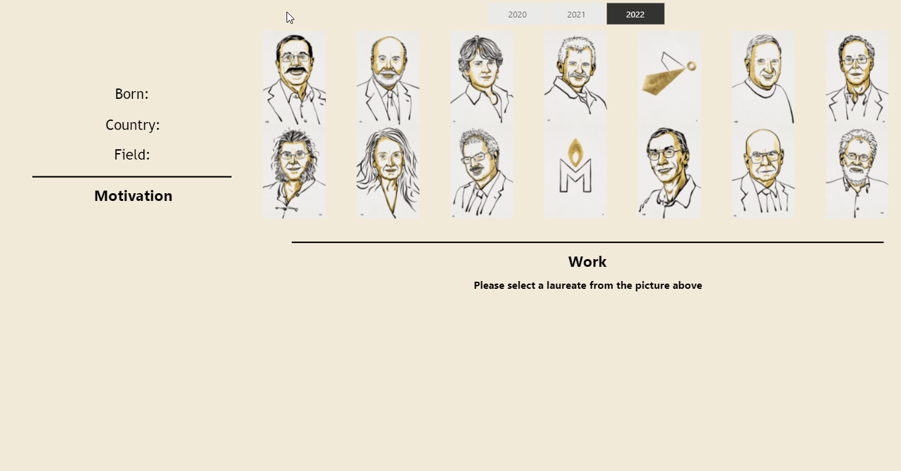
Laureates in 2022
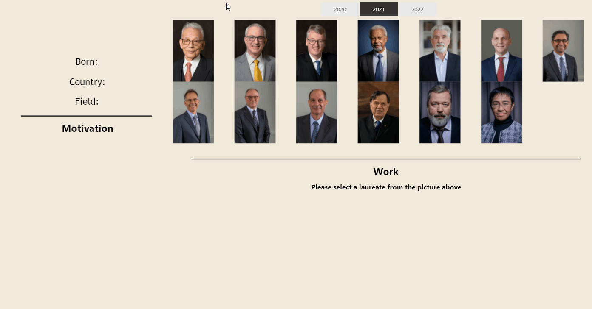
Laureates in 2021
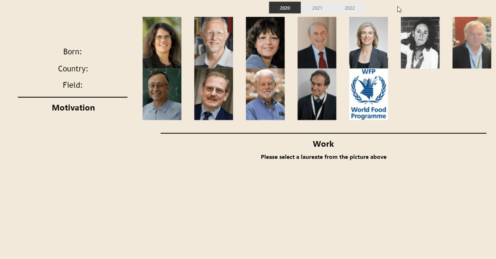
Laureates in 2020
So, it's not just people who can get awards, there are organizations too?
Indeed, there are two types of laureates - people and organizations, but the former are far more numerous, as you can see below:
Laureates: 959
Organizations: 30
Total Nobel Prizes: 989
Total Prize Amount (SEK): 6.33bn
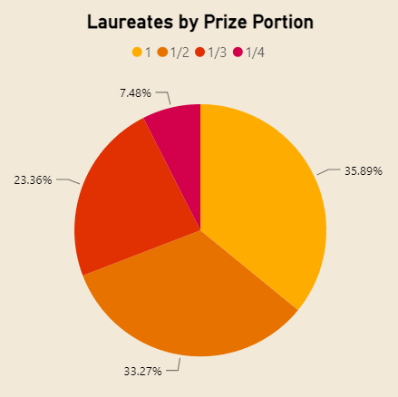
how do the nobel prize awards look over the years?
Let's dive deeper - a closer look at the history of the Nobel Prize reveals the impact of 2 major events, namely, the two world wars of the previous century, which saw a significant decrease (WWI) or, worse, a complete absence (WWII) of awards as seen in the timeline below.
What other changes does following Nobel Prize trends across the years reveal about potential directions the world is going in?
For starters, from the timeline above, we can see that the number of prizes awarded has almost doubled since its beginnings, from an average of 7 prizes per year in its first half a decade, to over 12 in the past few years.
Why is that? Is it easier to win a Nobel Prize today than it was back then?
Not at all, on the contrary perhaps, as we will later see.
Instead, this could be explained by the fact that in the first half of the 20th century there were only around 1000 physicists, as Gustav Källstrand, a senior curator at the Nobel Museum, stated, while today there are an estimated one million out there. What this means is that there were far fewer people back then who could be awarded a Nobel Prize, and the numbers show that.
Has this fact of there being fewer scientists in the world back then had any other implications on Nobel Prize trends?
Yes, let's take a look at the two graphs below, a line chart revealing how the average laureate award age has changed through the years, and a bar chart showing fields and age groups with most laureates:
One of the first things that we can take away from the charts above, is that, especially in traditional sciences (Medicine, Physics, Chemistry), there has been a trend of laureates winning prizes later in life. If the average age of those who won an award in the first part of the previous century was around 50 years old, now the average is 65.
We have more, many more scientists in the world today than we did back then, and therefore the competition is much higher.
Wait, so you don't get a Nobel Prize immediately after your pioneering work is complete? Doesn't making an important discovery automatically grant you an award the following year?
With thousands of people making discoveries every year, and a really high validation standard from the Nobel Prize committee, it can take many years for someone to win an award.
The violin graph below puts emphasis on just that - the average time between publishing an article and getting recognized with a Nobel Prize in traditional sciences:
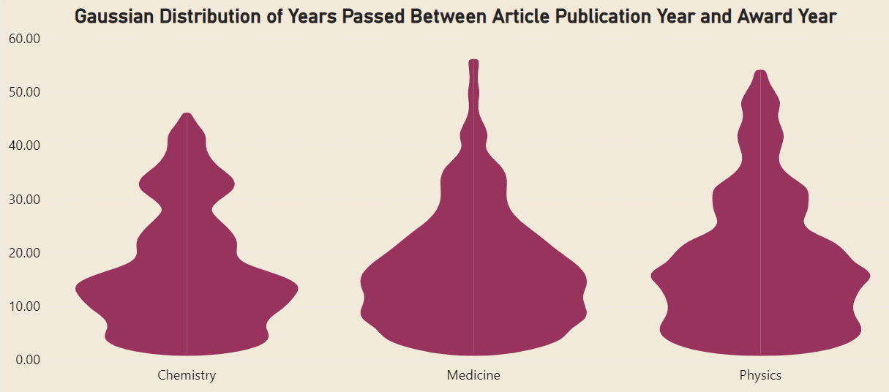
The average number of years between the publication of the article and getting an award in Chemistry and Medicine is 17 years, while in Physics it's over 18 years.
So what's up with these fields, and why do they see longer waiting times than the other three fields (Economic Sciences, Literature and Peace)?
Once again, general events in the history of the last century show up in the Nobel Prize numbers, given that the first part of the 20th century saw a scientific revolution, especially with Physics being an incredibly rapidly-growing field (remember Einstein?).
Therefore, with the world and thus the Nobel committee being highly interested in it, they were fast at recognizing achievements so they could help advancing the field.
On the other hand, in the Field of Peace, the story is quite different, having laureates follow the reverse aging trend, as seen below.
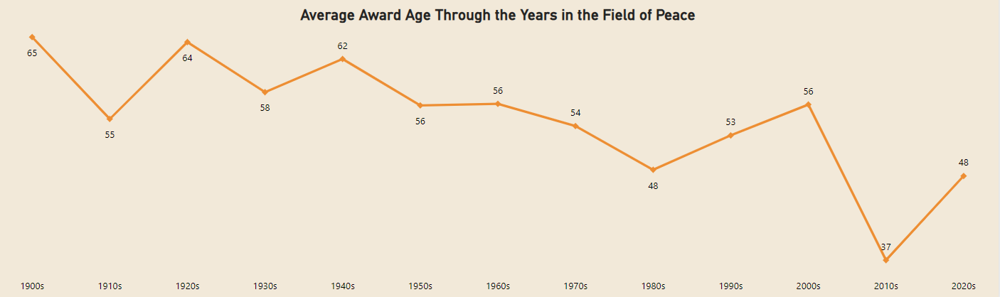
A possible explanation of this shows perhaps another trend of the world today, where a fast recognition of breakthroughs that might help our world stay a stable place, so that we do not repeat the mistakes of our past, is deemed of utmost importance.
The Peace Prize Committee will not wait to see if a worthwhile peace measure will succeed completely over 20 years, but instead choose to reward it timely, so that such endeavors are encouraged.
Perhaps the most striking example of this is the story of the youngest laureate to win a Nobel Prize award to date, Malala Yousafzai, who was only 17 at the time of receiving her Nobel Prize award.
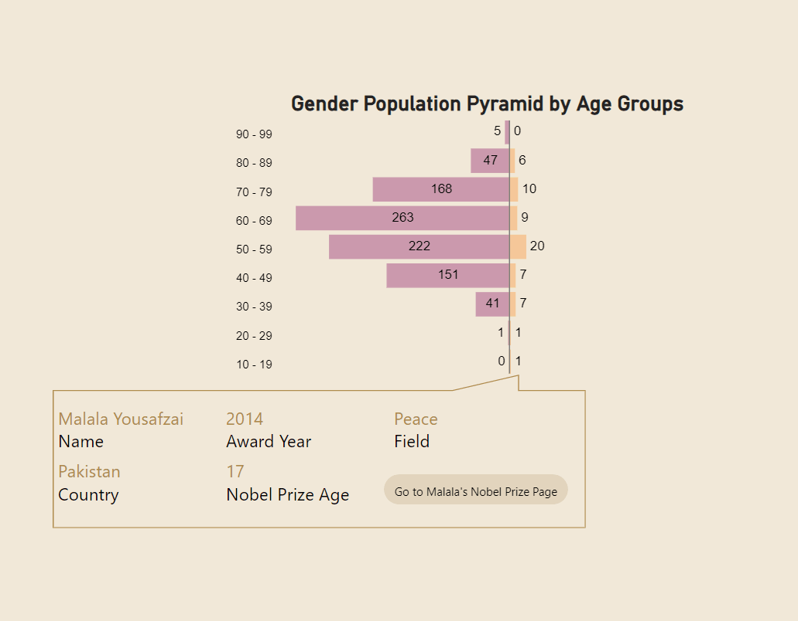
Speaking of striking trends, and with the example of a female laureate above, what does the male to female ratio look like in the Nobel Prize world?
Like with all the other trends, the subject of gender gaps across our history is also part of the Nobel Prize story.
So, despite all the present humanitarian efforts of the world to bridge these gaps, due to potential Nobel laureates having to wait years for a prize, the currently highly unbalanced pyramid below depicts how the world looked a few decades ago.
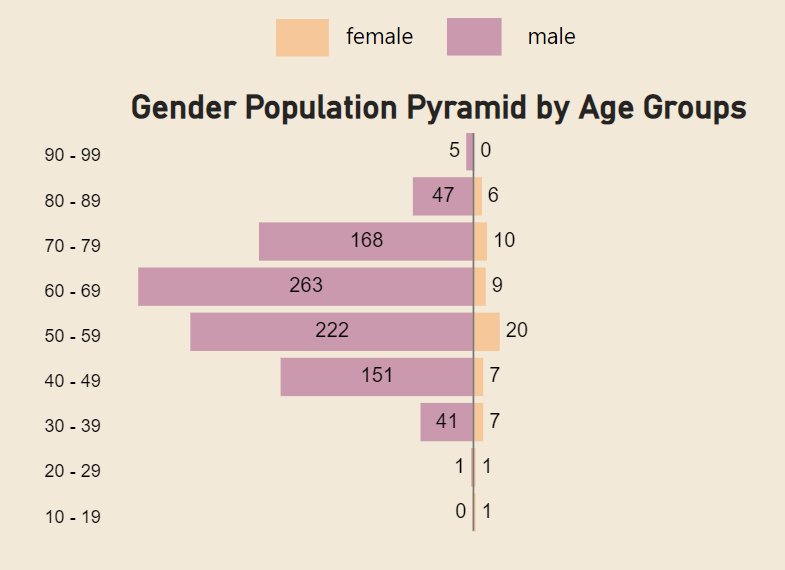
However, this is changing, as you can see in the line chart below, which has largely been supported by the fields in which females see the highest representation, namely Literature and Peace:
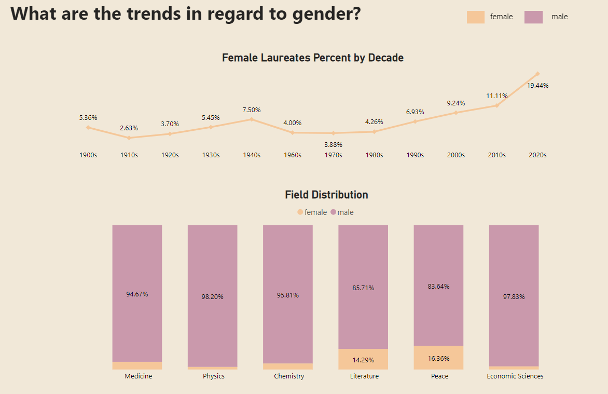
Even though men are still much more numerous in science, diversity is improving and the backlog for prizes (prizes carrying over from the past) is clearing, which will likely slowly make room for more female representation in the Nobel Prize.
One story that stands out on this subject is that of Marie Curie, the first female awarded a Nobel Prize, in 1903. When she was not nominated for the prize that year, her husband and a fellow spontaneous radiation researcher protested and refused the award, which forced the panel, relying on a technicality, to accept her late submission from 1902.
First Female Awarded
MArie Curie
Award Year: 1903
Field: Physics
Country: Poland
Award Age: 36
Who else stood out in the history of the Nobel Prize, apart from Malala Yousafzai and Marie Curie?
Below are a few other laureates who stood out for various reasons:
Oldest Laureate
John B. Goodenough
Award Year: 2019
Field: Chemistry
Country: Germany
Award Age: 97
First Nobel Prize in Chemistry
Jacobus H. van 't Hoff
Award Year: 1901
Field: Chemistry
Country: The Netherlands
Award Age: 49
First Nobel Prize in Medicine
Emil von behring
Award Year: 1901
Field: Medicine
Country: Poland
Award Age: 47
First Nobel Prize in Physics
Wilhelm conrad Röntgen
Award Year: 1901
Field: Physics
Country: Germany
Award Age: 56
First Nobel Prize in Peace
Frédéric Passy
Award Year: 1901
Field: Peace
Country: France
Award Age: 79
First Nobel Prize in Literature
Sully Prudhomme
Award Year: 1901
Field: Literature
Country: France
Award Age: 62
First Nobel Prizes in economic Sciences
Jan Tinbergen
Award Year: 1969
Field: Economic Sciences
Country: The Netherlands
Award Age: 66
Ragnar Frisch
Award Year: 1969
Field: Economic Sciences
Country: Norway
Award Age: 74
Laureates who declined the award
Le Duc Tho
Award Year: 1973
Field: Peace
Country: Vietnam
Award Age: 62
JEan-Paul Sartre
Award Year: 1964
Field: Literature
Country: France
Award Age: 59
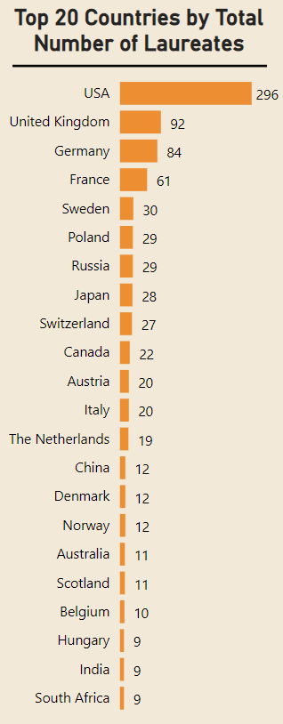
It seems that people all over the world are able to be awarded a Nobel Prize, are there countries that stand out in terms of how many laureates they have had?
This can be looked from two different angles: we can simply assess the highest number of laureates in each country, which will yield the bar chart on the right:
Or, perhaps more accurately, we can look at the number of laureates per 10 million people from their own country:
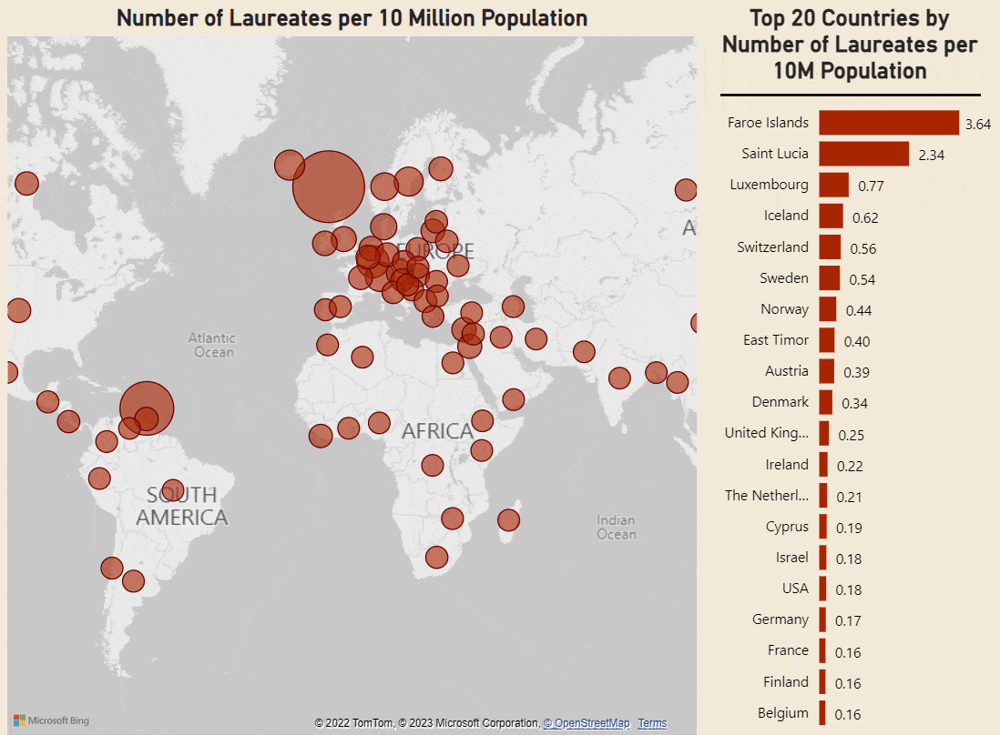
What does it take to be awarded a Nobel Prize? what is the motivation behind having your work recognized in such a way?
Certainly, a lot of spectacular work goes into making a breakthrough and being awarded a Nobel Prize. Behind all awards there are advancements in their respective fields, as well as a general contribution to the overall progress of the world. All this information, as well as lectures, photo gallery, and other resources, are available from the Nobel Prize Organization.
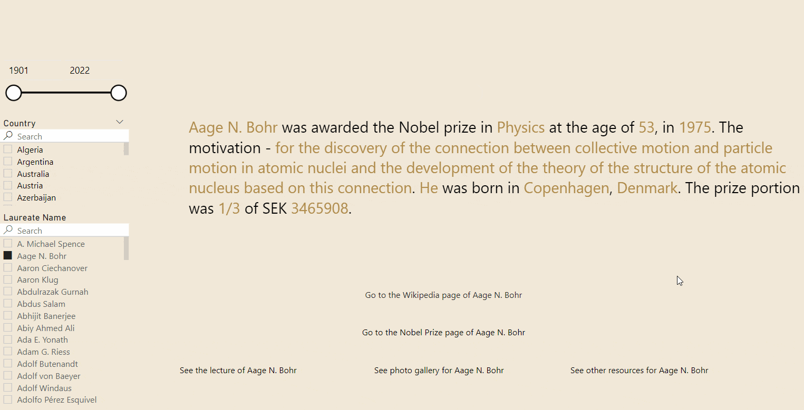
All of this work entails the publication of (usually numerous) articles, out of which far fewer are deemed worthy of a Nobel Prize.
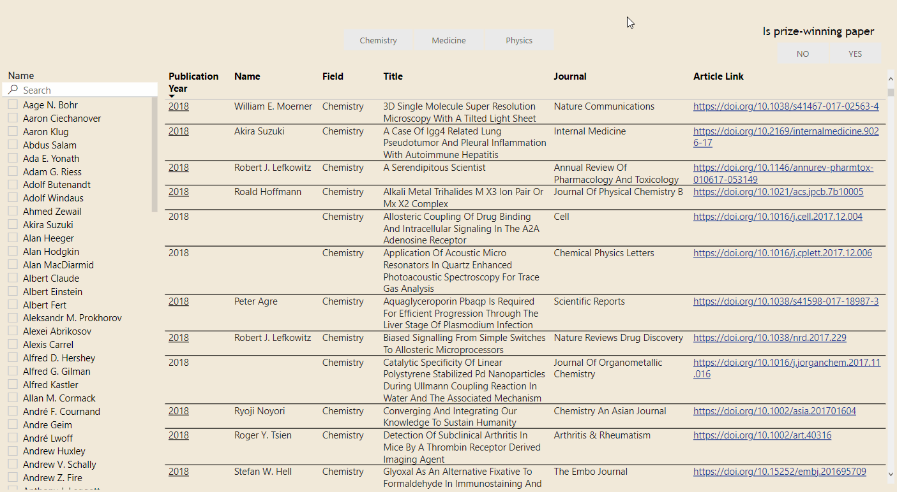
So, given all of this, what are my chances of being awarded a Nobel Prize in my lifetime?
You can play around a bit and see what other people with your specific background (from the same country, of the same gender and in the same age group) have won a Nobel Prize, and calculate your chances from there.
What motivated you to research this subject?
We were curious. We wanted to know about those who, in the silence of their laboratories and offices, or in the headlights of this world's tumultuous tendencies, help us stay the course.
We have answered some of the questions we had, but also raised new ones.
Do you have any unanswered questions?
Our purpose was to also give birth to a project that can inform people on this particular subject.
So hopefully, you can take away your own bits that spark an interest in you from this story. Here's some facts that we think our project can offer someone who is not familiar with the Nobel Prize:
The work behind this decade's Nobel Prize winners, as well as their bio
Who in your country has won a Nobel Prize
How many women have won a Nobel Prize, and who was the first
The motivation behind every Nobel Prize awarded
Who is the youngest or oldest laureates by fields, or by country
Who has been awarded more than 1 Nobel Prize
The articles published by Nobel Prize laureates in Chemistry, Physics and Medicine
Who has been awarded a Nobel Prize in your country
By using this website, you agree to the storing of cookies on your device to enhance site navigation, analyze site usage, and assist in our marketing efforts. View our Privacy Policy for more information.
When you visit websites, they may store or retrieve data in your browser. This storage is often necessary for the basic functionality of the website. The storage may be used for marketing, analytics, and personalization of the site, such as storing your preferences. Privacy is important to us, so you have the option of disabling certain types of storage that may not be necessary for the basic functioning of the website. Blocking categories may impact your experience on the website. More Infomartion
These items are required to enable basic website functionality.
Marketing
These items are used to deliver advertising that is more relevant to you and your interests. They may also be used to limit the number of times you see an advertisement and measure the effectiveness of advertising campaigns. Advertising networks usually place them with the website operator’s permission.
Personalization
These items allow the website to remember choices you make (such as your user name, language, or the region you are in) and provide enhanced, more personal features. For example, a website may provide you with local weather reports or traffic news by storing data about your current location.
Analytics
These items help the website operator understand how its website performs, how visitors interact with the site, and whether there may be technical issues. This storage type usually doesn’t collect information that identifies a visitor.